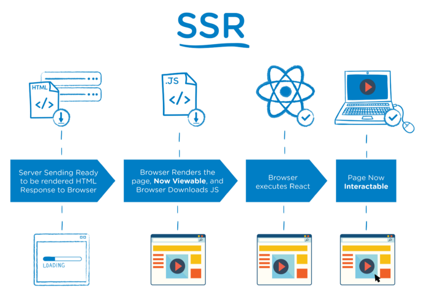

¿Qué es NextJS?
La nueva manera de crear aplicaciones con React
¿Qué es?
NextJS es una framework para React el cual nos brinda la posibilidad de crear aplicaciones en tres posibles maneras: Client Side Rendering (CSR), Server Side Rendering (SSR) y Static Site Generation (SSG)
Client Side Rendering (CSR)
Es una solución de render que hace que en un único archivo HTML se concentre todas las vistas, rutas, lógica y más para la aplicación. En este caso estamos dejándole todo el trabajo de render al navegador.

Server Side Rendering (SSR)
Esta solución de render viene desde hace años con PHP, en el que construimos un HTML y con PHP le mandamos los datos pero no son accesibles en el navegador. Quiere decir que cuando renderiza la página trae los datos en tiempo real directamente de nuestro servidor
Static Site Generation (SSG)
Se crean páginas HTML a partir de plantillas o componentes y una fuente de contenido como una base de datos o una REST API. Normalmente se hace usando archivos de Markdown pero en la actualidad se puede usar cualquier tipo de archivos siempre y cuando los datos vengan en formato JSON
¿Qué nos ofrece?
`/pages/index.jsx`
const Home = () => {
return (
Hello Word
This is my page made with NextJS
)
}
export default Home
Así se ve una página en NextJS, no es necesario importar React como se hace normalmente porque NextJS ya lo hace por nosotros
`src/views/index.jsx`
import React from "react"
const Home = () => {
return (
Hello Word
This is my page made with NextJS
)
}
export default Home
Normalmente en React debemos hacer esto para que el compilador detecte React en ese archivo
`Client Side Data Fetching`
import React from "react"
const Home = () => {
const [data, setData] = useState(null)
React.useEffect(() => {
fetch("...").then((result) => {
setData(result.data)
}).catch((err) => {
console.error(err)
});
}, [])
return (
{data ? (
{data.title}
{data.description}
) : "Loading..."}
)
}
export default Home
`getServerSideProps`
function Page({ data }) {
// Render data...
}
export async function getServerSideProps() {
const res = await fetch(`https://.../data`)
const data = await res.json()
return { props: { data } }
}
export default Page
`getStaticProps`
function Blog({ posts }) {
return (
{posts.map((post) => (
- {post.title}
))}
)
}
export async function getStaticProps() {
const res = await fetch('https://.../posts')
const posts = await res.json()
return {
props: {
posts,
},
}
}
export default Blog
`revalidate`
function Blog({ posts }) {
return (
{posts.map((post) => (
- {post.title}
))}
)
}
export async function getStaticProps() {
const res = await fetch('https://.../posts')
const posts = await res.json()
return {
props: {
posts,
},
revalidate: 1200
}
}
export default Blog
export async function getStaticPaths() {
return {
paths: [
{ params: { ... } }
],
fallback: true or false
};
}
return {
paths: [
{ params: { slug: 'how-to-use-google' } },
{ params: { slug: 'why-i-dont-use-nexjs' } }
],
fallback: true
}
- `https://myblog.com/posts/how-to-use-google`
- `https://myblog.com/posts/why-i-dont-use-nexjs`
return {
paths: [
{ params: { slug: 'how-to-use-google' } },
{ params: { slug: 'why-i-dont-use-nexjs' } }
],
fallback: true
}
import { useRouter } from 'next/router'
function Post({ post }) {
const router = useRouter()
if (router.isFallback) {
return Loading...
}
// Render post...
}
export async function getStaticPaths() {
return {
paths: [
{ params: { slug: 'how-to-use-google' } },
{ params: { slug: 'why-i-dont-use-nexjs' } }
],
fallback: true,
}
}
export async function getStaticProps({ params }) {
const res = await fetch(`https://.../posts/${params.slug}`)
const post = await res.json()
return {
props: { post },
revalidate: 1200,
}
}
export default Post
¿Qué puedo construir con NextJS?
- Blogs
- Portafolios
- Aplicaciones
- Y mucho más